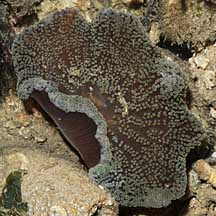
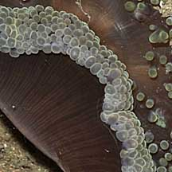
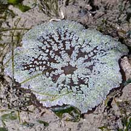

|
|
| sea anemones text index | photo index |
| Phylum Cnidaria > Class Anthozoa > Order Actiniaria > Genus Stichodactyla |
| Mini
carpet anemone Stichodactyla tapetum Family Stichodactylidae updated Dec 2024 Where seen? This tiny anemone is more commonly seen in our Northern shores such as Chek Jawa and Changi. Usually among seagrasses. Features: Oral disk 2-6cm in diameter. The tentacles are very short and look more like bumps. The tentacles are not so tightly packed together and especially in the centre, are neatly arranged into wedge-shaped groups, resembling the spokes of a wheel. The outer edge of the oral disk does not have a fringe of alternating long-short tentacles like Haddon's carpet anemone (Stichodactyla haddoni). Sometimes mistaken for babies of bigger carpet anemones. Here's more on how to tell apart the different kinds of carpet anemones. Status and threats: As at 2024, it is assessed not to be approaching the criteria for being listed among the threatened animals in Singapore. |
|
 Chek Jawa, Jul 08 |
 |
 Changi, May 11 |
*Species are difficult to positively identify without close examination.
On this website, they are grouped by external features for convenience of display.
| Mini carpet anemones on Singapore shores |
On wildsingapore
flickr
|
Links
References
|